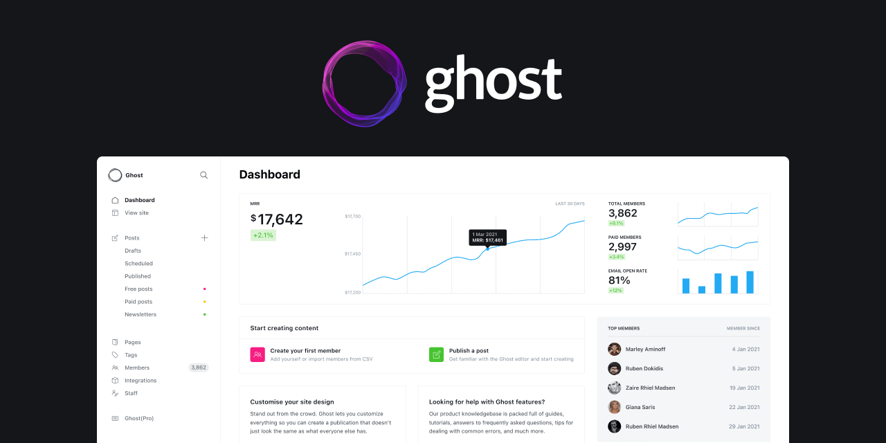

Ghost Docker Portainer Nginx

是的，写下这篇稿子也只是备忘而已。
比较方便安装和管理Docker的工具是Portainer，是一款图形化的管理工具，使用上非常便利，速度快而且稳定。但是，我还是更喜欢Cyberpanel，后面会专门记录。
流程
1.Docker
管方教程，或者第三方教程。
2.Portainer
按照官方教程或者第三方教程，安装好Portainer，打开http://ip:9000(默认端口)，然后登录。
3.模板安装Ghost，Nginx，filebrowser

4.配置
这些都是简要配置好的，基本上都只需要简要配置就可以完成需要的功能。
一是Ghost，需要在env里面增加一条url https://域名，不然你点击home后，会跳转localhost。
二是简单配置filebrowser，将volume对应srv的记录与nginx的选择为一致，然后才能读取nginx的配置文件。
三是进入filebrowser，修改nginx参数，配置反向代理〔网上教程很多，就不赘述了〕，在portainer的container页面重启nginx，然后打开你的域名，就可以进入Ghost的主页了。
第四步，准备好域名和ssl证书（推荐使用Cloudflare管理域名，可以免费获取ssl证书），修改nginx的配置文件，然后Ghost博客就可以上线https站点了。